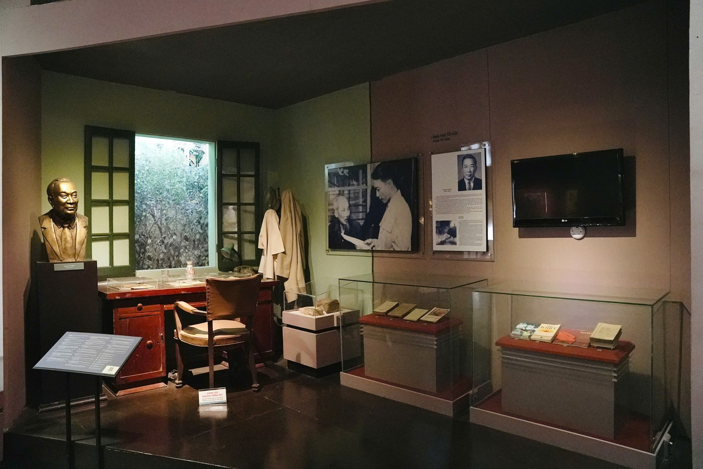
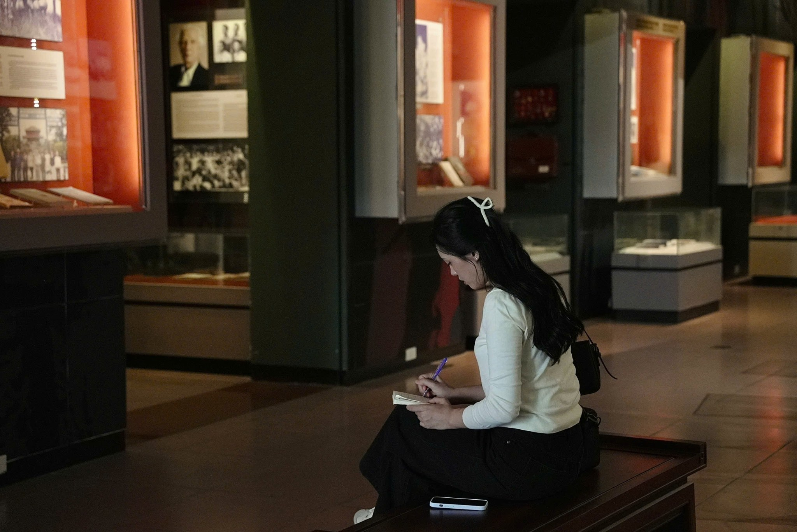
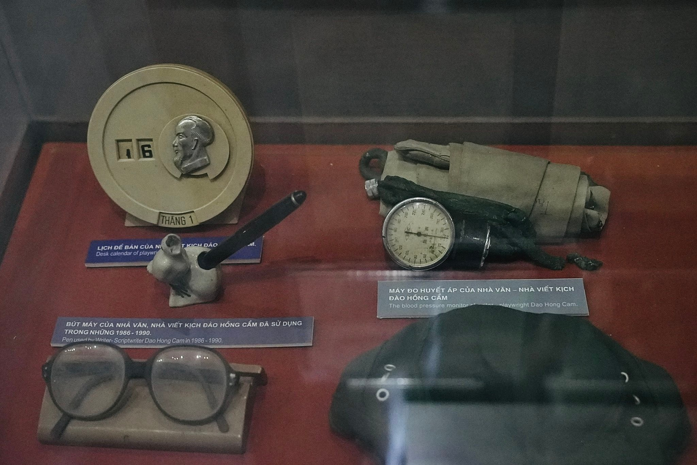
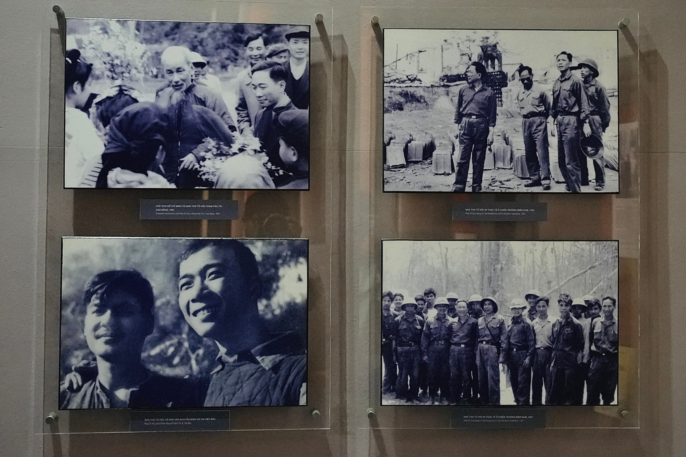
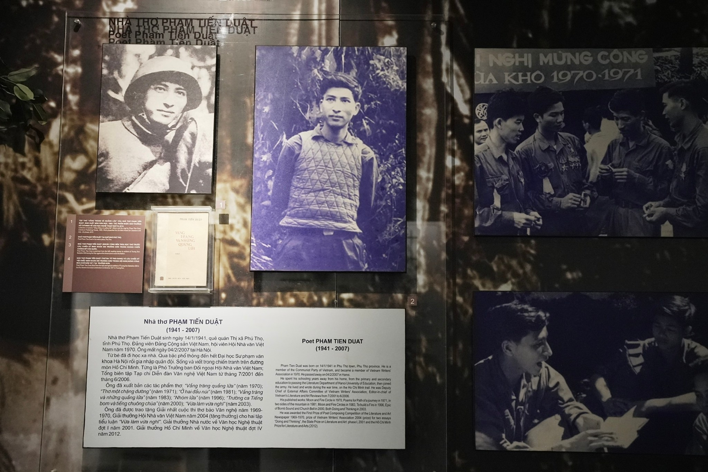

Trong bài
Ẩn mình trong con ngõ nhỏ trên đường Âu Cơ, Bảo tàng Văn học Việt Nam là điểm đến lowkey dành cho những người trẻ muốn khám phá văn chương trong không gian trầm lắng.
Trong cách nói của giới trẻ, “lowkey” thường được dùng để chỉ phong cách kín đáo, giản dị và không quá phô trương. Khi lựa chọn địa điểm vui chơi, nhiều người cũng ưu tiên những không gian ít náo nhiệt để tận hưởng thời gian riêng. Với những đặc điểm ấy, Bảo tàng Văn học Việt Nam là một gợi ý đáng cân nhắc cho những ai muốn trải nghiệm Hà Nội theo cách khác.
Một điểm đến “lowkey” giữa lòng Thủ đô
Nằm tại ngõ 275 Âu Cơ, Bảo tàng Văn học Việt Nam không nằm trên những tuyến phố du lịch quen thuộc của khu vực trung tâm Hà Nội. Tại đây, các không gian trưng bày được tổ chức theo từng giai đoạn và nội dung văn học, với nhiều tư liệu, hình ảnh và hiện vật gắn với cuộc đời, sự nghiệp của các tác giả.

Khách tham quan có thể dành một buổi để khám phá các khu triển lãm theo sở thích, đặc biệt đối với những ai muốn tìm một địa điểm yên tĩnh.
Không gian yên tĩnh với những gam màu trầm
Một trong những điểm đáng chú ý của bảo tàng là cách sử dụng ánh sáng và màu sắc tại các phòng triển lãm. Những tủ trưng bày màu cam đất, bức tường xanh đậm cùng hệ thống ảnh tư liệu đen trắng tạo nên không gian mang sắc thái hoài cổ. Tại một số khu vực, ánh đèn được bố trí tập trung vào hiện vật, giúp người tham quan chú ý hơn đến nội dung trưng bày.
Với những người yêu thích khám phá các bảo tàng ở Hà Nội, đây cũng là không gian có thể khai thác dưới góc nhìn nhiếp ảnh kiến trúc, đặc biệt là những góc hành lang, mái vòm.

Khám phá văn chương theo cách riêng
Bảo tàng thu hút khách tham quan bởi không gian trưng bày và cơ hội khám phá văn chương qua nhiều loại hình tư liệu và hiện vật. Từ những bản thảo, hình ảnh chân dung đến những kỷ vật gắn với cuộc đời các tác giả, mỗi khu trưng bày đều cung cấp thêm thông tin về những tác phẩm từng được nhiều thế hệ độc giả biết đến.



Dù đi một mình hay cùng bạn bè, du khách đều có thể tận hưởng không gian yên tĩnh tại Bảo tàng Văn học Việt Nam. Mỗi người có thể lựa chọn cách khám phá riêng, từ tìm hiểu các tư liệu, hiện vật đến cùng nhau trao đổi về những tác giả, tác phẩm yêu thích.

Với những ai thích trải nghiệm văn hóa nhưng không muốn tham gia các hoạt động đông đúc, đây là một lựa chọn đáng để thử. Việc dành thời gian đọc thông tin trưng bày và trao đổi về một câu chuyện văn học đã đủ để khiến buổi hẹn trở nên thú vị.
Bảo tàng Văn học Việt Nam